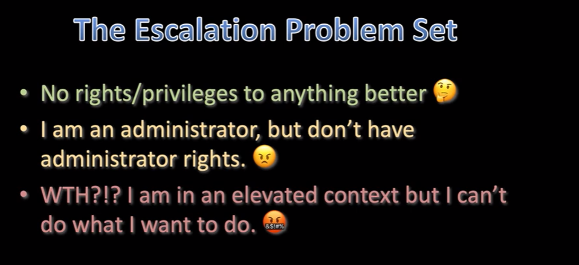

2 situations which are subsets - you are in the context of an administrative userbut you don't have admin rights
- you're in an elevated context, but you can't do what you need to do
User Account Control:- - Introduced in Windows Vista
- - Three Levels of Process Integrity
- ~ High (Admin Rights)
- ~ Medium (Standard Rights)
- ~ Low (Restricted rights)
- - Local Administrator
- -Runs as standard user (medium integrity)
- - Must elevate to assume full rights (high integrity)
- - This is a bypass UAC scenario
- this is that prompt that asks you if the program is allowed to make changes

- Windows 7introduced auto-evalte rights
- this allows applications to go into elevated contexts without letting the user know
- windows vista notified users everytime and people got fucking pissed
- Allowing the auto-evalate enables us to mess with User Account Control
- fucking typed them and they crashed

-